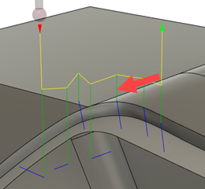

<div id="inspection_tool_feedEntry"><p>計測される接点にプローブが移動する速度。これらの移動は、キャンバス内で緑色で表示されます。</p>
<table class="tipTable" cellspacing="10">
<tr>
<td><center></center></td>
</tr><tr>
<td><center></center></td>
</tr></table>
</div>